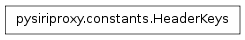
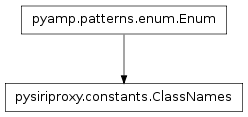
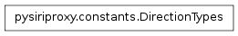
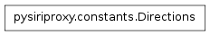
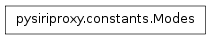

The constants module¶
The constants module contains classes which contain properties that define various constant values used throughout the system.
The majority of these properties are used to access certain values from the object dictionaries sent between the iPhone and Apple’s server.
The HeaderKeys class¶

The Keys class¶

- class pysiriproxy.constants.Keys[source]¶
The Keys class defines various properties which contain strings which are keys to the dictionary objects sent between the iPhone and Apple’s server.
- AceId¶
The aceId key.
- AssistantId¶
The key for the AssistantId property of an object.
- Birthday¶
The birthday key for an object.
- Class¶
The class name for the object.
- Data¶
The key for the data property of an object.
- Date¶
The date key for an object.
- DateSent¶
The key for the dateSent property of an object.
- DisplayText¶
The key for the displayText property of an object.
- DueDate¶
The due date key for an object.
- FirstName¶
The key for the firstName property of an object.
- FullName¶
The key for the fullName property of an object.
- Group¶
The group for the object.
- Identifier¶
The key for the identifier property of an object.
- Interpretations¶
The interpretations key for an object.
- Label¶
The key for the label property of an object.
- LastName¶
The key for the lastName property of an object.
- MsgSender¶
The key for the msgSender property of an object.
- Number¶
The key for the number property of an object.
- OrderedContext¶
The key for the orderedContext property of an object.
- Outgoing¶
The key for the outgoing property of an object.
- Phones¶
The key for the phones property of an object.
- Phrases¶
The phrases key for an object.
- Properties¶
The properties key for the object.
- Recognition¶
The recognition key for an object.
- RefId¶
The refId for the object.
- RemoveSpaceAfter¶
The removeSpaceAfter key for an object.
- RemoveSpaceBefore¶
The removeSpaceBefore key for an object.
- SelectionResponse¶
The key for the selectionResponse property of an object.
- SessionValidationData¶
The key for the SessionValidationData property of an object.
- SpeakableSelectionResponse¶
The key for the speakableSelectionResponse property of an object.
- SpeakableText¶
The speakable text key for an object.
- SpeechId¶
The key for the SpeechId property of an object.
- Street¶
The street value.
- Text¶
The text key for an object.
- TheatricalReleaseDate¶
The theatrical release date.
- Title¶
The title key for an object.
- Tokens¶
The tokens key for an object.
- Utterance¶
The utterance key for an object.
- Version¶
The version key for an object.
The ClassNames class¶

- class pysiriproxy.constants.ClassNames[source]¶
The ClassNames class contains properties which define the names of the class names of objects sent between the iPhone and Apple’s server.
- AnyObject¶
The AnyObject property defined the AnyObject object class.
- CancelRequest¶
The CancelRequest property defined the CancelRequest object class.
- CancelSpeech¶
The CancelSpeech property defined the CancelSpeech object class.
- ClearContext¶
The ClearContext property defined the ClearContext object class.
- CommandFailed¶
The CommandFailed property defined the CommandFailed object class.
- CommandIgnored¶
The CommandIgnored property defined the CommandIgnored object class.
- FinishSpeech¶
The FinishSpeech property defined the FinishSpeech object class.
- LoadAssistant¶
The LoadAssistant property defined the LoadAssistant object class.
- RequestCompleted¶
The RequestCompleted property defined the RequestCompleted object class.
- SetApplicationContext¶
The SetApplicationContext property defined the SetApplicationContext object class.
- SetRequestOrigin¶
The SetRequestOrigin property defined the SetRequestOrigin object class.
- SetRestrictions¶
The SetRestrictions property defined the SetRestrictions object class.
- SpeechPacket¶
The SpeechPacket property defined the SpeechPacket object class.
- SpeechRecognized¶
The SpeechRecognized property defined the SpeechRecognized object class.
- StartRequest¶
The StartRequest property defined the StartRequest object class.
- StartSpeechRequest¶
The StartSpeechRequest property defined the StartSpeechRequest object class.
The DirectionTypes class¶

The Directions class¶

- class pysiriproxy.constants.Directions[source]¶
The Directions class contains several properties which are used to indicate which direction data is entering the system.
- From_Server¶
The From_Server property indicates that data was received from Apple’s server.
- From_iPhone¶
The From_iPhone property indicates that data was received from the iPhone.
The Modes class¶

- class pysiriproxy.constants.Modes[source]¶
The Modes class contains properties which define different types of data receiving modes.
- Line¶
The Line property indicates the mode in which lines of data is sent and received.
- Raw¶
The Raw property indicates the mode in which raw data is sent and received.